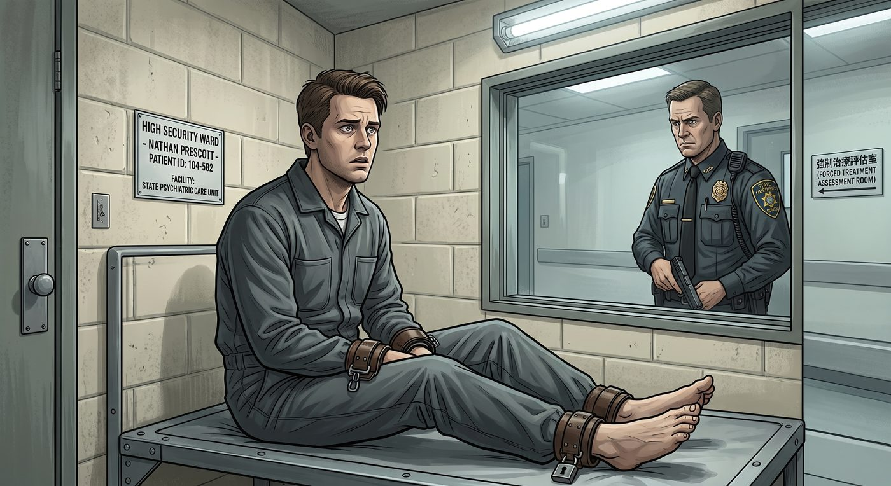

漩渦的崩解(倒敘)

一、頂層的冷血切割
暗房事件曝光的當天下午,一支由波特蘭乃至紐約律師事務所空降而來的頂級刑辯團隊,已經進駐布萊克威爾附近的酒店,全面接管 Nathan Prescott 的所有口供程序。
沒有人見過 Sean Prescott 露面——他透過律師團隊隔空操作,策略清晰而冷酷:主打「精神失常辯護」與「受害者化」路線。律師團隊很快拿出一疊厚厚的精神科就診記錄、長期服用的大劑量抗精神病藥物處方,試圖把 Nathan 包裝成「被變態導師 Jefferson 精神控制、洗腦操縱的未成年受害者」。
與此同時,Prescott 家族動用整套媒體公關資源,全力壓制任何關於「基金會資助暗房」的相關指控——所有罪責,被精準地鎖死在 Jefferson 和 Nathan 兩人身上,家族本身則被包裝成「同樣遭受矇騙、深受其害的無辜資助方」。
案發不到一週,Nathan 便被悄然轉移進一間高度戒備的司法精神病院——這不是 Prescott 家族私下安排的療養機構,而是州政府設立、專門收治因精神障礙被判定無受審能力的重刑犯的正式監管單位,配有武裝警衛與終身強制治療評估機制。他遠離了公眾視線,也遠離了任何可能對他不利的審判程序,但同樣,也徹底失去了自由。
這場切割,乾淨、迅速,不帶一絲情感。
二、以為刪除就能全身而退
暗房醜聞在全國新聞連續播了將近兩週後,漩渦俱樂部那批平日橫著走的體育明星與外圍派對常客們,第一反應是最本能也最愚蠢的一招——連夜刪除社交媒體上所有跟俱樂部有關的痕跡。
派對照片、群聊記錄、閱後即焚的視頻、簽到打卡——一夜之間,彷彿這一切從未存在過。個人簽名檔統一改成了「為受害者祈禱」之類的制式悼詞。
他們以為這樣就能全身而退。
三、雲端沒有真正的刪除
事實證明,「刪除」這個動作,在真正的司法取證面前,不過是自欺欺人的表演。
FBI 網絡犯罪科持著聯邦搜查令,直接向各大社交平台母公司調取了過去兩年的伺服器底層鏡像與已刪除數據備份。所有被刪掉的東西——影像、語音、簽到紀錄——被百分之百還原,清清楚楚攤在調查報告裡。
「你們刪的不是證據,」負責此案的探員在一次內部簡報上,對著滿桌堆積如山的還原資料,語氣裡帶著一絲見怪不怪的疲憊,「是給自己加了一條『妨礙司法公正』的罪名。」
Max 雖然沒有直接出庭指控所有人,但她根據自己記憶中反覆穿梭漩渦派對現場的片段,協助調查小組整理出一份相對精確的「派對違禁品流轉時間表」,間接鎖定了幾名曾經替 Nathan 把風、搬運物資的核心成員。
四、分級究責
調查機構沒有搞一刀切的清算,而是嚴格按照涉入程度,分成三個梯隊處理。
第一梯隊,直接共犯——確實參與過協助搬運失去意識受害者、或涉入實質性侵犯脅迫的核心成員,證據確鑿,直接以重罪起訴,面臨實刑監禁,人生履歷就此劃上句點。
第二梯隊,幫兇與傳播者——沒有直接參與核心犯罪,但在派對現場起鬨、轉發過受害者的隱私影像、在網路上參與過網暴的跟班們,刑事上證據不足以構成重罪,但全部被列入聽證會調查名單,校董會直接祭出最高規格的紀律處分:即刻開除學籍,劣跡記錄永久寫入他們的大學體育協會誠信檔案。
第三梯隊,單純不知情的旁觀者——經過數十小時的隔離訊問,確認只是單純參加派對喝酒、沒有涉入任何違法或霸凌行為的普通隊員,雖然最終洗清了嫌疑,但屬於他們的特權時代,也一併宣告終結——美式足球隊被無限期停賽,豪華專屬休息室和優先選課權,全部被收回。
五、審訊室裡的秒慫
到了警局審訊室裡,那群平時橫著走的橄欖球明星和啦啦隊隊長們,反應出奇一致——一個個抖得像被抓到考試作弊的小學生,反覆強調自己「只是去喝點酒、跳跳舞而已,完全不知道地下室在幹嘛」「都是 Nathan 一個人策劃逼我們去的」「跟那些見不得光的東西一點關係都沒有」。
六、特權時代的終結
曾經指望靠體育特長保送常春藤名校的幾位明星球員,因為聽證會記錄公開,被各大名校球探集體拉黑——沒有任何一所學校,願意承擔簽下「涉嫌參與重大校園侵害庇護鏈球員」的公關風險。幾所常春藤名校和一級體育特招院校,幾乎在同一週內,火速撤回了他們原本已經到手的入學邀請。
那些曾在走廊上橫衝直撞、隨意霸凌他人的體育健將們,如今只能低著頭,在律師陪同下回宿舍收拾行李。他們路過天台或草坪時,再也沒有啦啦隊的歡呼,只剩全體師生冰冷而遙遠的注視。
七、旁觀者的態度
對於這場清算,Chloe、Max、Kate 三人甚至不需要親自出手。
Chloe 叼著棒棒糖靠在皮卡車旁,看著那幾個平時不可一世的體育生垂頭喪氣地被家長領走,只是不屑地吹了聲口哨。
「看來沒有了裁判偏袒,」她說,「這幫大塊頭連半場都撐不過去。」
Kate 和 Max 則在天台安靜地給秋海棠澆水,校園廣播裡正播報著新一輪的開除通告。
正義沒有因為「體育特長」或「刪除記錄」留下任何死角。屬於阿卡迪亞灣特權階級的那層遮羞布,被徹底撕碎,陽光第一次,公平地照進了這座小鎮的每一個角落。
八、獨自留下的人
清算的塵埃落定後,漩渦俱樂部核心圈裡,幾乎沒有人能夠全身而退——除了 Victoria Chase。
她沒有被列入任何一個梯隊,因為她從未直接參與過搬運、下藥或暴力脅迫這類刑事層面的行為。但她比任何人都清楚,自己曾經做過什麼——那些讓 Kate 幾乎走上天台邊緣的病毒視頻,源頭正是自己當年親手按下的分享鍵。
看著昔日那些狐朋狗友一個接一個身敗名裂、被押著離開校園,Victoria 站在自己房間的落地窗前,望著樓下那輛駛離的家長座車,久久沒有說話。
她比誰都清楚,自己欠下的那筆帳,遠遠沒有結清。
沒有一場派對,能永遠掩蓋住底下真正腐爛的東西。